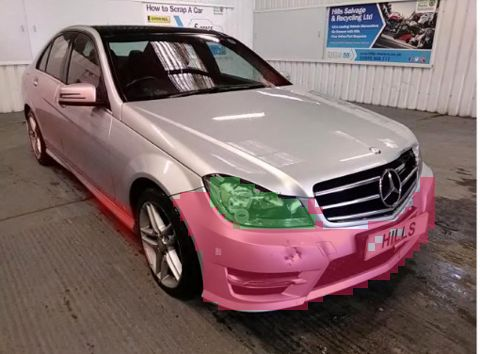

Condición (solo para el revisor): C10 · etiqueta controlada: OOD

En esta descripción, es correcto afirmar que el vehículo presenta abolladuras. Se describe el estado visible.
INSUFFICIENT — SUPPORTED: 0.583 · SUSPICIOUS: 0.417 · INSUFFICIENT: 0.000
U = 0.679 (τU = 0.679) · c̄ = 0.625 (τc = 0.000)
Se abstuvo: incertidumbre U=0.679 > τU=0.679
| nodo | tipo | g | c,q,r,u |
|---|---|---|---|
| 0 | claim | 0.172 | [0.25, 1.0, 0.6927, 0.0095] |
| 1 | source | 0.689 | [1.0, 0.6894, 1.0, 0.0] |
| 2 | visual | 0.098 | [1.0, 0.7425, 0.4202, 0.6861] |
| 3 | visual | 0.075 | [1.0, 0.9479, 0.4202, 0.8125] |
| 4 | forensic | 0.227 | [1.0, 0.6894, 0.602, 0.454] |
| origen | destino | relación | peso g·p |
|---|---|---|---|
| 0 | 2 | support | 0.098 |
| 0 | 3 | support | 0.074 |
| 2 | 3 | overlap | 0.000 |